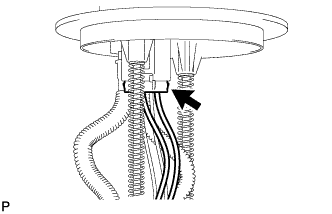
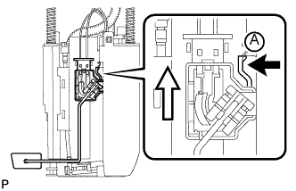
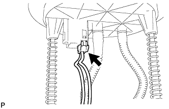
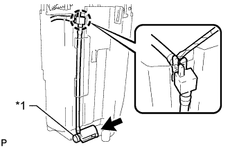
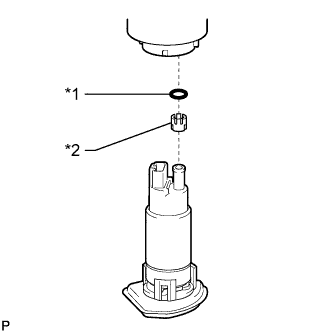

ТОПЛИВНЫЙ НАСОС (для моделей с одиночным топливным баком) > РАЗБОРКА |
| 1. СНИМИТЕ ДАТЧИК УРОВНЯ ТОПЛИВА В СБОРЕ |
|  |
Отсоедините разъем датчика уровня топлива.
|  |
Нажмите на захват датчика уровня топлива А. Затем сдвиньте датчик вверх, чтобы снять его.
 | Нажмите |
 | Продольное перемещение |
| 2. СНИМИТЕ РАСШИРИТЕЛЬНЫЙ ТОПЛИВНЫЙ БАЧОК № 1 |
|  |
Отсоедините разъем топливного насоса.
|  |
Отсоедините эжектор от расширительного топливного бачка № 1.
| *1 | Насос-эжектор |
Отсоедините захват от расширительного бачка № 1 с помощью небольшой отвертки.
 |
Освободите 3 захвата из отверстий с помощью отвертки.
 |
Освободите 3 захвата из отверстий с помощью отвертки.
| 3. СНИМИТЕ ТОПЛИВНЫЙ НАСОС |
 |
Освободите 5 захватов из отверстий с помощью отвертки и отсоедините топливный насос от корпуса топливного фильтра.
| *1 | Корпус топливного фильтра |
Отсоедините разъем жгута проводов топливного насоса от топливного насоса и снимите его.
|  |
Снимите кольцевое уплотнение и распорную втулку топливного насоса с топливного насоса.
| *1 | Кольцевое уплотнение |
| *2 | Распорная втулка топливного насоса |
| 4. СНИМИТЕ ГЛАВНЫЙ ТОПЛИВНЫЙ КЛАПАН В СБОРЕ |
 |
Снимите главный топливный клапан с корпуса топливного фильтра.
| *1 | Корпус топливного фильтра |
| *2 | Кольцевое уплотнение |
Снимите 2 кольцевых уплотнения с главного топливного клапана.